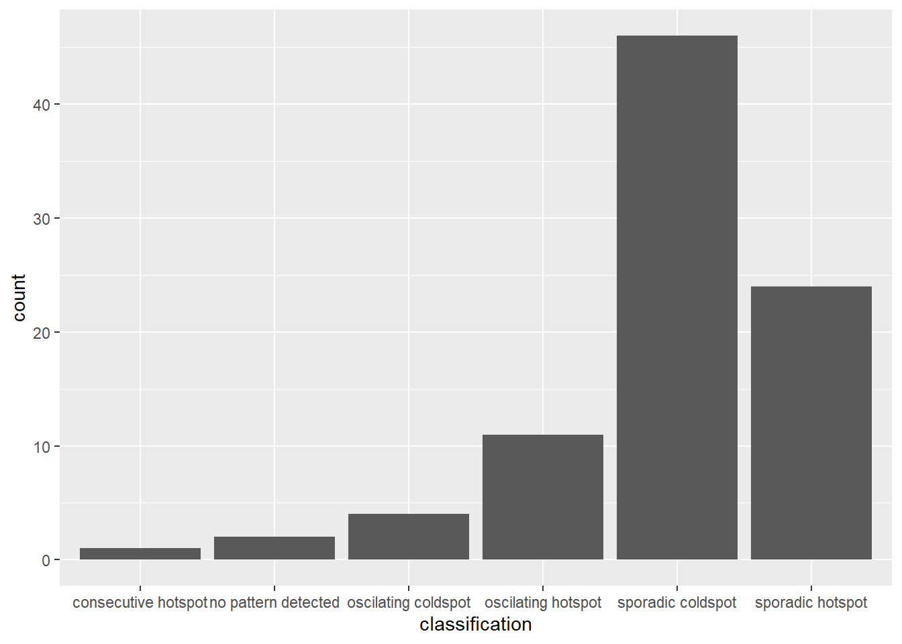

pacman::p_load(sf, tmap, sfdep, tidyverse, knitr, plotly)In-class Exercise 2
Note: This In-class Exercise 2 combines the following three in-class exercises on isss624.netlify.app:
In-class Exercise 2: Spatial Weights - sfdep methods
In-class Exercise 2: Global and Local Measures of Spatial Association - sfdep methods
In-class Exercise 2: Emerging Hot Spot Analysis: sfdep methods
1 Overview
This in-class exercise introduces an alternative R package, sfdep. According to Josiah Perry, the developer of the package, “sfdep builds on the great shoulders of spdep package for spatial dependence. sfdep creates an sf and tidyverse friendly interface to the package as well as introduces new functionality that is not present in spdep. sfdep utilizes list columns extensively to make this interface possible.”
2 Getting Started - Installing and Loading the R Packages
The code chunk below loads the packages used in this in-class exercise:
sf for importing, managing, and processing geospatial data;
tidyverse (i.e. readr, tidyr, dplyr) for performing data science tasks such as importing, tidying, and wrangling data;
tmap for thematic mapping;
knitr for embedding R code in different document formats (e.g., HTML) to facilitate dynamic report generation;
sfdep for analysing spatial dependence and spatial relationships in data (building on spdep); and
plotly for making interactive plots.
3 Importing Data
For the purpose of the in-class exercise, the Hunan data sets are used:
Hunan’s County Boundary Layer. This is a geospatial data set in ESRI shapefile format.
Hunan’s Local Development Indicators 2012. This csv file contains data on selected Hunan’s local development indicators in 2012.
The data sets are placed under two sub-folders:
geospatial (County Boundary Layer), and
aspatial (Local Development Indicators 2012).
These two sub-folders are within the data folder of my In-class_Ex2 folder.
3.1 Importing shapefile
The st_read() (under sf package) is used to import the geospatial data set: hunan, a polygon feature layer in ESRI shapefile format.
Student Note: The geospatial objects are polygon features. There are a total of 88 features and 8 fields in
hunansimple feature data frame.hunanis in wgs84 coordinate system.
hunan = st_read(dsn = "data/geospatial", layer = "Hunan")Reading layer `Hunan' from data source
`C:\jmphosis\ISSS624\In-class_Ex\In-class_Ex2\data\geospatial'
using driver `ESRI Shapefile'
Simple feature collection with 88 features and 7 fields
Geometry type: POLYGON
Dimension: XY
Bounding box: xmin: 108.7831 ymin: 24.6342 xmax: 114.2544 ymax: 30.12812
Geodetic CRS: WGS 843.2 Importing csv file
The read_csv() (under readr package) is used to import the aspatial data set: hunan_2012, a csv file.
Student Note: The
hunan_2012tibble data frame contains 88 rows and 29 columns. There are two columns with character data - County and City.
hunan2012 = read_csv("data/aspatial/Hunan_2012.csv")3.3 Performing Relational Join
The attribute table of the spatial polygons data frame, hunan, is updated using the attribute fields of the tibble data frame, hunan2012 using left_join() (under dplyr package). In order to retain the geospatial properties, the left data frame must be the sf data.frame (i.e. hunan)
Student Note: Without explicitly stating the “by” argument for left_join(), the two tables are joined by the ‘County’ columns.
Student Note: The geometry variable is automatically selected (when using dplyr package - part of tidyverse).
hunan_GDPPC = left_join(hunan,hunan2012) %>%
select(1:4, 7, 15)
hunan_GDPPCSimple feature collection with 88 features and 6 fields
Geometry type: POLYGON
Dimension: XY
Bounding box: xmin: 108.7831 ymin: 24.6342 xmax: 114.2544 ymax: 30.12812
Geodetic CRS: WGS 84
First 10 features:
NAME_2 ID_3 NAME_3 ENGTYPE_3 County GDPPC
1 Changde 21098 Anxiang County Anxiang 23667
2 Changde 21100 Hanshou County Hanshou 20981
3 Changde 21101 Jinshi County City Jinshi 34592
4 Changde 21102 Li County Li 24473
5 Changde 21103 Linli County Linli 25554
6 Changde 21104 Shimen County Shimen 27137
7 Changsha 21109 Liuyang County City Liuyang 63118
8 Changsha 21110 Ningxiang County Ningxiang 62202
9 Changsha 21111 Wangcheng County Wangcheng 70666
10 Chenzhou 21112 Anren County Anren 12761
geometry
1 POLYGON ((112.0625 29.75523...
2 POLYGON ((112.2288 29.11684...
3 POLYGON ((111.8927 29.6013,...
4 POLYGON ((111.3731 29.94649...
5 POLYGON ((111.6324 29.76288...
6 POLYGON ((110.8825 30.11675...
7 POLYGON ((113.9905 28.5682,...
8 POLYGON ((112.7181 28.38299...
9 POLYGON ((112.7914 28.52688...
10 POLYGON ((113.1757 26.82734...3.4 Visualising Regional Development Indicator
A basemap and a choropleth map are prepared usign qtm() (under tmap package) to visualise the 2012 Gross Domestic Product Per Capita (GDPPC).
tmap_mode("plot")
tm_shape(hunan_GDPPC) +
tm_fill("GDPPC",
style = "quantile",
palette = "Blues",
title = "GDPPC") +
tm_borders(alpha = 0.5) +
tm_layout(main.title = "Distribution of GDP per capita by district, Hunan Province",
main.title.position = "center",
main.title.size = 1.2,
legend.height = 0.45,
legend.width = 0.35,
frame = TRUE) +
tm_compass(type="8star", size = 2) +
tm_scale_bar() +
tm_grid(alpha =0.2)
4 Deriving Contiguity Spatial Weights
By and large, there are two type of spatial weights, they are contiguity weights and distance-based weights. In this section, the contiguity spatial weights are derived by using sfdep package.
The two steps for deriving contiguity spatial weights are:
Identify contiguity neighbour list using st_contiguity() (under sfdep package); and
Derive contiguity spatial weights using st_weights() (under sfdep package).
4.1 Identifying Contiguity Neighbours Using Queen’s Method
The st_contiguity() (under sfdep package) is used to derive a contiguity neighbour list using Queen’s method.
Student Note: The “queen” argument in the function is set to either TRUE (default) or FALSE. The TRUE option will return a list of first order neighbours using the Queen’s contiguity criteria; the FALSE option will return a list of first order neighbours using the Rook’s method. According to Queen’s criteria, two regions are considered neighbours if they share any part of their boundary (even if it is a single point). This results in a more inclusive definition of neighbour relationships.
Student Note: The summary report below shows that there are 88 area units in
nb_queen. The most connected area unit (85) has 11 neighbours. The least connected area units (30 and 65) have only one neighbour each.
Student Note: The .before = 1 argument indicates that the new column, “nb”, should appear at the front.
nb_queen = hunan_GDPPC %>%
mutate(nb = st_contiguity(geometry),
.before = 1)
summary(nb_queen$nb)Neighbour list object:
Number of regions: 88
Number of nonzero links: 448
Percentage nonzero weights: 5.785124
Average number of links: 5.090909
Link number distribution:
1 2 3 4 5 6 7 8 9 11
2 2 12 16 24 14 11 4 2 1
2 least connected regions:
30 65 with 1 link
1 most connected region:
85 with 11 linksnb_queenSimple feature collection with 88 features and 7 fields
Geometry type: POLYGON
Dimension: XY
Bounding box: xmin: 108.7831 ymin: 24.6342 xmax: 114.2544 ymax: 30.12812
Geodetic CRS: WGS 84
First 10 features:
nb NAME_2 ID_3 NAME_3 ENGTYPE_3
1 2, 3, 4, 57, 85 Changde 21098 Anxiang County
2 1, 57, 58, 78, 85 Changde 21100 Hanshou County
3 1, 4, 5, 85 Changde 21101 Jinshi County City
4 1, 3, 5, 6 Changde 21102 Li County
5 3, 4, 6, 85 Changde 21103 Linli County
6 4, 5, 69, 75, 85 Changde 21104 Shimen County
7 67, 71, 74, 84 Changsha 21109 Liuyang County City
8 9, 46, 47, 56, 78, 80, 86 Changsha 21110 Ningxiang County
9 8, 66, 68, 78, 84, 86 Changsha 21111 Wangcheng County
10 16, 17, 19, 20, 22, 70, 72, 73 Chenzhou 21112 Anren County
County GDPPC geometry
1 Anxiang 23667 POLYGON ((112.0625 29.75523...
2 Hanshou 20981 POLYGON ((112.2288 29.11684...
3 Jinshi 34592 POLYGON ((111.8927 29.6013,...
4 Li 24473 POLYGON ((111.3731 29.94649...
5 Linli 25554 POLYGON ((111.6324 29.76288...
6 Shimen 27137 POLYGON ((110.8825 30.11675...
7 Liuyang 63118 POLYGON ((113.9905 28.5682,...
8 Ningxiang 62202 POLYGON ((112.7181 28.38299...
9 Wangcheng 70666 POLYGON ((112.7914 28.52688...
10 Anren 12761 POLYGON ((113.1757 26.82734...One of the advantage of sfdep over spdep is that the former’s output is an sf tibble data frame.
kable(head(nb_queen,
n = 10))| nb | NAME_2 | ID_3 | NAME_3 | ENGTYPE_3 | County | GDPPC | geometry |
|---|---|---|---|---|---|---|---|
| 2, 3, 4, 57, 85 | Changde | 21098 | Anxiang | County | Anxiang | 23667 | POLYGON ((112.0625 29.75523… |
| 1, 57, 58, 78, 85 | Changde | 21100 | Hanshou | County | Hanshou | 20981 | POLYGON ((112.2288 29.11684… |
| 1, 4, 5, 85 | Changde | 21101 | Jinshi | County City | Jinshi | 34592 | POLYGON ((111.8927 29.6013,… |
| 1, 3, 5, 6 | Changde | 21102 | Li | County | Li | 24473 | POLYGON ((111.3731 29.94649… |
| 3, 4, 6, 85 | Changde | 21103 | Linli | County | Linli | 25554 | POLYGON ((111.6324 29.76288… |
| 4, 5, 69, 75, 85 | Changde | 21104 | Shimen | County | Shimen | 27137 | POLYGON ((110.8825 30.11675… |
| 67, 71, 74, 84 | Changsha | 21109 | Liuyang | County City | Liuyang | 63118 | POLYGON ((113.9905 28.5682,… |
| 9, 46, 47, 56, 78, 80, 86 | Changsha | 21110 | Ningxiang | County | Ningxiang | 62202 | POLYGON ((112.7181 28.38299… |
| 8, 66, 68, 78, 84, 86 | Changsha | 21111 | Wangcheng | County | Wangcheng | 70666 | POLYGON ((112.7914 28.52688… |
| 16, 17, 19, 20, 22, 70, 72, 73 | Chenzhou | 21112 | Anren | County | Anren | 12761 | POLYGON ((113.1757 26.82734… |
4.2 Identifying Contiguity Neighbours Using Rooks’ Method
The st_contiguity() (under sfdep package) is used to derive a contiguity neighbour list using Rooks’ method.
Student Note: The “queen” argument in the function is set to either TRUE (default) or FALSE. The TRUE option will return a list of first order neighbours using the Queen’s contiguity criteria; the FALSE option will return a list of first order neighbours using the Rook’s method. According to Rook’s criteria, two regions are considered neighbours if they share an entire edge (but not corners). This results in a stricter definition neighbour relationships.
Student Note: The summary report below shows that there are 88 area units in
nb_rook. The most connected area unit (85) has 10 (not 11) neighbours. The least connected area units (30 and 65) have only one neighbour each.
Student Note: The “.before = 1” argument in mutate() indicates that the new column, “nb” should appear at the front.
nb_rook = hunan_GDPPC %>%
mutate(nb = st_contiguity(geometry,
queen = FALSE),
.before = 1)
summary(nb_rook$nb)Neighbour list object:
Number of regions: 88
Number of nonzero links: 440
Percentage nonzero weights: 5.681818
Average number of links: 5
Link number distribution:
1 2 3 4 5 6 7 8 9 10
2 2 12 20 21 14 11 3 2 1
2 least connected regions:
30 65 with 1 link
1 most connected region:
85 with 10 linksnb_rookSimple feature collection with 88 features and 7 fields
Geometry type: POLYGON
Dimension: XY
Bounding box: xmin: 108.7831 ymin: 24.6342 xmax: 114.2544 ymax: 30.12812
Geodetic CRS: WGS 84
First 10 features:
nb NAME_2 ID_3 NAME_3 ENGTYPE_3 County
1 3, 4, 57, 85 Changde 21098 Anxiang County Anxiang
2 57, 58, 78, 85 Changde 21100 Hanshou County Hanshou
3 1, 4, 5, 85 Changde 21101 Jinshi County City Jinshi
4 1, 3, 5, 6 Changde 21102 Li County Li
5 3, 4, 6, 85 Changde 21103 Linli County Linli
6 4, 5, 69, 75, 85 Changde 21104 Shimen County Shimen
7 67, 71, 74, 84 Changsha 21109 Liuyang County City Liuyang
8 9, 46, 47, 56, 78, 80, 86 Changsha 21110 Ningxiang County Ningxiang
9 8, 66, 68, 78, 84, 86 Changsha 21111 Wangcheng County Wangcheng
10 16, 19, 20, 22, 70, 72, 73 Chenzhou 21112 Anren County Anren
GDPPC geometry
1 23667 POLYGON ((112.0625 29.75523...
2 20981 POLYGON ((112.2288 29.11684...
3 34592 POLYGON ((111.8927 29.6013,...
4 24473 POLYGON ((111.3731 29.94649...
5 25554 POLYGON ((111.6324 29.76288...
6 27137 POLYGON ((110.8825 30.11675...
7 63118 POLYGON ((113.9905 28.5682,...
8 62202 POLYGON ((112.7181 28.38299...
9 70666 POLYGON ((112.7914 28.52688...
10 12761 POLYGON ((113.1757 26.82734...4.3 Identifying Higher Order Neighbours
The st_nb_lag_cumul() (under sfdep package) is used to identify higher order contiguity neighbours. The result contains both first and second order neighbors because the order is set to 2.
Student Note: The summary report below shows that there are 88 area units in
nb2_queen. For order set at 2, the most connected area unit (56) has 33 neighbours. The least connected area units (30 and 88) have five neighbours each.
nb2_queen = hunan_GDPPC %>%
mutate(nb = st_contiguity(geometry),
nb2 = st_nb_lag_cumul(nb, 2),
.before = 1)
summary(nb2_queen$nb2)Neighbour list object:
Number of regions: 88
Number of nonzero links: 1324
Percentage nonzero weights: 17.09711
Average number of links: 15.04545
Link number distribution:
5 7 8 9 10 11 12 13 14 15 16 17 18 19 20 21 22 23 24 26 28 33
2 1 6 4 5 4 8 5 10 4 4 8 4 8 5 2 2 1 2 1 1 1
2 least connected regions:
30 88 with 5 links
1 most connected region:
56 with 33 linksnb2_queenSimple feature collection with 88 features and 8 fields
Geometry type: POLYGON
Dimension: XY
Bounding box: xmin: 108.7831 ymin: 24.6342 xmax: 114.2544 ymax: 30.12812
Geodetic CRS: WGS 84
First 10 features:
nb
1 2, 3, 4, 57, 85
2 1, 57, 58, 78, 85
3 1, 4, 5, 85
4 1, 3, 5, 6
5 3, 4, 6, 85
6 4, 5, 69, 75, 85
7 67, 71, 74, 84
8 9, 46, 47, 56, 78, 80, 86
9 8, 66, 68, 78, 84, 86
10 16, 17, 19, 20, 22, 70, 72, 73
nb2
1 2, 3, 4, 5, 6, 32, 56, 57, 58, 64, 69, 75, 76, 78, 85
2 1, 3, 4, 5, 6, 8, 9, 32, 56, 57, 58, 64, 68, 69, 75, 76, 78, 85
3 1, 2, 4, 5, 6, 32, 56, 57, 69, 75, 78, 85
4 1, 2, 3, 5, 6, 57, 69, 75, 85
5 1, 2, 3, 4, 6, 32, 56, 57, 69, 75, 78, 85
6 1, 2, 3, 4, 5, 32, 53, 55, 56, 57, 69, 75, 78, 85
7 9, 19, 66, 67, 71, 73, 74, 76, 84, 86
8 2, 9, 19, 21, 31, 32, 34, 35, 36, 41, 45, 46, 47, 56, 58, 66, 68, 74, 78, 80, 84, 85, 86
9 2, 7, 8, 19, 21, 35, 46, 47, 56, 58, 66, 67, 68, 74, 76, 78, 80, 84, 85, 86
10 11, 14, 15, 16, 17, 18, 19, 20, 21, 22, 23, 70, 71, 72, 73, 74, 82, 83, 86
NAME_2 ID_3 NAME_3 ENGTYPE_3 County GDPPC
1 Changde 21098 Anxiang County Anxiang 23667
2 Changde 21100 Hanshou County Hanshou 20981
3 Changde 21101 Jinshi County City Jinshi 34592
4 Changde 21102 Li County Li 24473
5 Changde 21103 Linli County Linli 25554
6 Changde 21104 Shimen County Shimen 27137
7 Changsha 21109 Liuyang County City Liuyang 63118
8 Changsha 21110 Ningxiang County Ningxiang 62202
9 Changsha 21111 Wangcheng County Wangcheng 70666
10 Chenzhou 21112 Anren County Anren 12761
geometry
1 POLYGON ((112.0625 29.75523...
2 POLYGON ((112.2288 29.11684...
3 POLYGON ((111.8927 29.6013,...
4 POLYGON ((111.3731 29.94649...
5 POLYGON ((111.6324 29.76288...
6 POLYGON ((110.8825 30.11675...
7 POLYGON ((113.9905 28.5682,...
8 POLYGON ((112.7181 28.38299...
9 POLYGON ((112.7914 28.52688...
10 POLYGON ((113.1757 26.82734...4.4 Deriving Contiguity Weights Using Queen’s Method
The st_weights() (under sfdep package) is used to compute the contiguity weights.
The arguments for st_weights() include:
nb: A neighbour list object as created by st_neighbours().
style: Default “W” for row standardised weights. This value can also be “B”, “C”, “U”, “minmax”, and “S”.
The “style” argument set to “W” specifies a binary spatial weight matrix, where the presence of a spatial relationship is indicated by 1, and absence by 0. All neighbouring units are considered equal in terms of their impact on the target unit, reflecting a uniform spatial relationship.
If the “style” argument is set to “B”, it specifies a binary spatial lag matrix, where the presence of a spatial relationship is indicated by 1, and absence by 0. At the same time, the direction of the connection is considered for the calculations.
“C” is globally standardised (sums over all links to n), “U” is equal to “C” divided by the number of neighbours (sums over all links to unity), while “S” is the variance-stabilizing coding scheme proposed by Tiefelsdorf et al. (1999) (sums over all links to n).
allow_zero: If TRUE, assigns zero as lagged value to zone without neighbors.
wm_q = hunan_GDPPC %>%
mutate(nb = st_contiguity(geometry),
wt = st_weights(nb,
style = "W"),
.before = 1)
wm_qSimple feature collection with 88 features and 8 fields
Geometry type: POLYGON
Dimension: XY
Bounding box: xmin: 108.7831 ymin: 24.6342 xmax: 114.2544 ymax: 30.12812
Geodetic CRS: WGS 84
First 10 features:
nb
1 2, 3, 4, 57, 85
2 1, 57, 58, 78, 85
3 1, 4, 5, 85
4 1, 3, 5, 6
5 3, 4, 6, 85
6 4, 5, 69, 75, 85
7 67, 71, 74, 84
8 9, 46, 47, 56, 78, 80, 86
9 8, 66, 68, 78, 84, 86
10 16, 17, 19, 20, 22, 70, 72, 73
wt
1 0.2, 0.2, 0.2, 0.2, 0.2
2 0.2, 0.2, 0.2, 0.2, 0.2
3 0.25, 0.25, 0.25, 0.25
4 0.25, 0.25, 0.25, 0.25
5 0.25, 0.25, 0.25, 0.25
6 0.2, 0.2, 0.2, 0.2, 0.2
7 0.25, 0.25, 0.25, 0.25
8 0.1428571, 0.1428571, 0.1428571, 0.1428571, 0.1428571, 0.1428571, 0.1428571
9 0.1666667, 0.1666667, 0.1666667, 0.1666667, 0.1666667, 0.1666667
10 0.125, 0.125, 0.125, 0.125, 0.125, 0.125, 0.125, 0.125
NAME_2 ID_3 NAME_3 ENGTYPE_3 County GDPPC
1 Changde 21098 Anxiang County Anxiang 23667
2 Changde 21100 Hanshou County Hanshou 20981
3 Changde 21101 Jinshi County City Jinshi 34592
4 Changde 21102 Li County Li 24473
5 Changde 21103 Linli County Linli 25554
6 Changde 21104 Shimen County Shimen 27137
7 Changsha 21109 Liuyang County City Liuyang 63118
8 Changsha 21110 Ningxiang County Ningxiang 62202
9 Changsha 21111 Wangcheng County Wangcheng 70666
10 Chenzhou 21112 Anren County Anren 12761
geometry
1 POLYGON ((112.0625 29.75523...
2 POLYGON ((112.2288 29.11684...
3 POLYGON ((111.8927 29.6013,...
4 POLYGON ((111.3731 29.94649...
5 POLYGON ((111.6324 29.76288...
6 POLYGON ((110.8825 30.11675...
7 POLYGON ((113.9905 28.5682,...
8 POLYGON ((112.7181 28.38299...
9 POLYGON ((112.7914 28.52688...
10 POLYGON ((113.1757 26.82734...5 Distance-based Weights
There are three popularly used distance-based spatial weights, they are:
Fixed distance weights;
Adaptive distance weights; and
Inverse distance weights (IDW).
5.1 Deriving Fixed Distance Weights
Firstly, the upper limit for the distance band would need to be derived.
st_nb_dists() (under sfdep package) is used to calculate the nearest neighbour distance. The output is a list of distances for each observation’s neighbors list.
unlist() (under base package) is then used to return the output as a vector so that the summary statistics of the nearest neighbour distances can be derived.
The summary statistics report below shows that the maximum nearest neighbour distance is 65.80 km. Hence, the threshold value is set at 66 km to ensure that each area will have at least one neighbour.
geo = st_geometry(hunan_GDPPC)
nb = st_knn(geo, longlat = TRUE)
dists = unlist(st_nb_dists(geo, nb))
summary(dists) Min. 1st Qu. Median Mean 3rd Qu. Max.
21.56 29.11 36.89 37.34 43.21 65.80 The fixed distance weights are then computed.
st_dists_band() (under sfdep package) is used to identify neighbors based on a distance band (i.e. 66km). The output is a list of neighbours (i.e. nb).
st_weights() is then used to calculate polygon spatial weights of the nb list. Note that:
Default “style” argument is set to “W” for row standardized weights, and
Default “allow_zero” is set to TRUE, which assigns zero as lagged value to zone without neighbors.
wm_fd = hunan_GDPPC %>%
mutate(nb = st_dist_band(geometry,
upper = 66),
wt = st_weights(nb),
.before = 1)
wm_fdSimple feature collection with 88 features and 8 fields
Geometry type: POLYGON
Dimension: XY
Bounding box: xmin: 108.7831 ymin: 24.6342 xmax: 114.2544 ymax: 30.12812
Geodetic CRS: WGS 84
First 10 features:
nb
1 2, 3, 4, 5, 57, 64
2 1, 57, 58, 78, 85
3 1, 4, 5, 57
4 1, 3, 5, 6
5 1, 3, 4, 6, 69
6 4, 5, 69
7 67, 71, 84
8 9, 46, 47, 78, 80
9 8, 46, 66, 68, 84, 86
10 16, 20, 22, 70, 72, 73
wt NAME_2
1 0.1666667, 0.1666667, 0.1666667, 0.1666667, 0.1666667, 0.1666667 Changde
2 0.2, 0.2, 0.2, 0.2, 0.2 Changde
3 0.25, 0.25, 0.25, 0.25 Changde
4 0.25, 0.25, 0.25, 0.25 Changde
5 0.2, 0.2, 0.2, 0.2, 0.2 Changde
6 0.3333333, 0.3333333, 0.3333333 Changde
7 0.3333333, 0.3333333, 0.3333333 Changsha
8 0.2, 0.2, 0.2, 0.2, 0.2 Changsha
9 0.1666667, 0.1666667, 0.1666667, 0.1666667, 0.1666667, 0.1666667 Changsha
10 0.1666667, 0.1666667, 0.1666667, 0.1666667, 0.1666667, 0.1666667 Chenzhou
ID_3 NAME_3 ENGTYPE_3 County GDPPC geometry
1 21098 Anxiang County Anxiang 23667 POLYGON ((112.0625 29.75523...
2 21100 Hanshou County Hanshou 20981 POLYGON ((112.2288 29.11684...
3 21101 Jinshi County City Jinshi 34592 POLYGON ((111.8927 29.6013,...
4 21102 Li County Li 24473 POLYGON ((111.3731 29.94649...
5 21103 Linli County Linli 25554 POLYGON ((111.6324 29.76288...
6 21104 Shimen County Shimen 27137 POLYGON ((110.8825 30.11675...
7 21109 Liuyang County City Liuyang 63118 POLYGON ((113.9905 28.5682,...
8 21110 Ningxiang County Ningxiang 62202 POLYGON ((112.7181 28.38299...
9 21111 Wangcheng County Wangcheng 70666 POLYGON ((112.7914 28.52688...
10 21112 Anren County Anren 12761 POLYGON ((113.1757 26.82734...Student Note: The wt values of each row adds to 1 as a result of row standardisation. The wt values of each neighbour of a polygon are the same as a result of fixed distance weights.
5.2 Deriving Adaptive Distance Weights
One of the characteristics of fixed distance weight matrix is that more densely settled areas (usually the urban areas) tend to have more neighbours and the less densely settled areas (usually the rural counties) tend to have less neighbours. Having many neighbours smoothes the neighbour relationship across more neighbours.
It is possible to control the numbers of neighbours directly using st_knn() (under sfdep package).
The adaptive distance weights are then computed.
st_knn() (under sfdep package) is used to identify neighbors based on k (i.e. k = 8 indicates the nearest eight neighbours). The output is a list of neighbours (i.e. nb).
st_weights() (under sfdep package) is then used to calculate polygon spatial weights of the nb list. Note that:
Default “style” argument is set to “W” for row standardized weights, and
Default “allow_zero” is set to TRUE, which assigns zero as lagged value to zone without neighbors.
wm_ad = hunan_GDPPC %>%
mutate(nb = st_knn(geometry,
k=8),
wt = st_weights(nb),
.before = 1)
wm_adSimple feature collection with 88 features and 8 fields
Geometry type: POLYGON
Dimension: XY
Bounding box: xmin: 108.7831 ymin: 24.6342 xmax: 114.2544 ymax: 30.12812
Geodetic CRS: WGS 84
First 10 features:
nb
1 2, 3, 4, 5, 57, 58, 64, 76
2 1, 3, 8, 57, 58, 68, 78, 85
3 1, 2, 4, 5, 6, 57, 64, 85
4 1, 2, 3, 5, 6, 57, 64, 69
5 1, 2, 3, 4, 6, 57, 69, 85
6 1, 2, 3, 4, 5, 69, 75, 85
7 9, 66, 67, 68, 71, 74, 84, 86
8 2, 9, 35, 46, 47, 78, 80, 86
9 8, 46, 47, 66, 68, 78, 84, 86
10 16, 17, 19, 20, 22, 70, 72, 73
wt NAME_2 ID_3
1 0.125, 0.125, 0.125, 0.125, 0.125, 0.125, 0.125, 0.125 Changde 21098
2 0.125, 0.125, 0.125, 0.125, 0.125, 0.125, 0.125, 0.125 Changde 21100
3 0.125, 0.125, 0.125, 0.125, 0.125, 0.125, 0.125, 0.125 Changde 21101
4 0.125, 0.125, 0.125, 0.125, 0.125, 0.125, 0.125, 0.125 Changde 21102
5 0.125, 0.125, 0.125, 0.125, 0.125, 0.125, 0.125, 0.125 Changde 21103
6 0.125, 0.125, 0.125, 0.125, 0.125, 0.125, 0.125, 0.125 Changde 21104
7 0.125, 0.125, 0.125, 0.125, 0.125, 0.125, 0.125, 0.125 Changsha 21109
8 0.125, 0.125, 0.125, 0.125, 0.125, 0.125, 0.125, 0.125 Changsha 21110
9 0.125, 0.125, 0.125, 0.125, 0.125, 0.125, 0.125, 0.125 Changsha 21111
10 0.125, 0.125, 0.125, 0.125, 0.125, 0.125, 0.125, 0.125 Chenzhou 21112
NAME_3 ENGTYPE_3 County GDPPC geometry
1 Anxiang County Anxiang 23667 POLYGON ((112.0625 29.75523...
2 Hanshou County Hanshou 20981 POLYGON ((112.2288 29.11684...
3 Jinshi County City Jinshi 34592 POLYGON ((111.8927 29.6013,...
4 Li County Li 24473 POLYGON ((111.3731 29.94649...
5 Linli County Linli 25554 POLYGON ((111.6324 29.76288...
6 Shimen County Shimen 27137 POLYGON ((110.8825 30.11675...
7 Liuyang County City Liuyang 63118 POLYGON ((113.9905 28.5682,...
8 Ningxiang County Ningxiang 62202 POLYGON ((112.7181 28.38299...
9 Wangcheng County Wangcheng 70666 POLYGON ((112.7914 28.52688...
10 Anren County Anren 12761 POLYGON ((113.1757 26.82734...5.3 Deriving Inverse Distance Weights
IDW assigns higher weights to neighbours that are closer and lower weights to neighbours that are further away.
The inverse distance weights (IDW) are then computed.
st_contiguity() (under sfdep package) is used to identify the neighbours by using contiguity criteria. The output is a list of neighbours (i.e. nb).
st_inverse_distance() (under sfdep package) is then used to calculate inverse distance weights of neighbours on the nb list.
wm_idw = hunan_GDPPC %>%
mutate(nb = st_contiguity(geometry),
wts = st_inverse_distance(nb, geometry,
scale = 1,
alpha = 1),
.before = 1)
wm_idwSimple feature collection with 88 features and 8 fields
Geometry type: POLYGON
Dimension: XY
Bounding box: xmin: 108.7831 ymin: 24.6342 xmax: 114.2544 ymax: 30.12812
Geodetic CRS: WGS 84
First 10 features:
nb
1 2, 3, 4, 57, 85
2 1, 57, 58, 78, 85
3 1, 4, 5, 85
4 1, 3, 5, 6
5 3, 4, 6, 85
6 4, 5, 69, 75, 85
7 67, 71, 74, 84
8 9, 46, 47, 56, 78, 80, 86
9 8, 66, 68, 78, 84, 86
10 16, 17, 19, 20, 22, 70, 72, 73
wts
1 0.01526149, 0.03515537, 0.02176677, 0.02836978, 0.01029857
2 0.01526149, 0.01601100, 0.01911052, 0.02327058, 0.01591694
3 0.03515537, 0.04581089, 0.04116397, 0.01208437
4 0.02176677, 0.04581089, 0.04637578, 0.01585302
5 0.04116397, 0.04637578, 0.01896212, 0.01351099
6 0.01585302, 0.01896212, 0.02710909, 0.01140718, 0.01080890
7 0.01621067, 0.01536702, 0.01133628, 0.01836488
8 0.01930410, 0.02675555, 0.02151751, 0.01076895, 0.02608065, 0.01519804, 0.01337412
9 0.01930410, 0.01651371, 0.01798519, 0.01473155, 0.03015561, 0.01612293
10 0.02737233, 0.01390810, 0.01458881, 0.02156771, 0.02419268, 0.02350470, 0.01784174, 0.01621545
NAME_2 ID_3 NAME_3 ENGTYPE_3 County GDPPC
1 Changde 21098 Anxiang County Anxiang 23667
2 Changde 21100 Hanshou County Hanshou 20981
3 Changde 21101 Jinshi County City Jinshi 34592
4 Changde 21102 Li County Li 24473
5 Changde 21103 Linli County Linli 25554
6 Changde 21104 Shimen County Shimen 27137
7 Changsha 21109 Liuyang County City Liuyang 63118
8 Changsha 21110 Ningxiang County Ningxiang 62202
9 Changsha 21111 Wangcheng County Wangcheng 70666
10 Chenzhou 21112 Anren County Anren 12761
geometry
1 POLYGON ((112.0625 29.75523...
2 POLYGON ((112.2288 29.11684...
3 POLYGON ((111.8927 29.6013,...
4 POLYGON ((111.3731 29.94649...
5 POLYGON ((111.6324 29.76288...
6 POLYGON ((110.8825 30.11675...
7 POLYGON ((113.9905 28.5682,...
8 POLYGON ((112.7181 28.38299...
9 POLYGON ((112.7914 28.52688...
10 POLYGON ((113.1757 26.82734...6 Global Measures of Spatial Association
6.1 Computing Global Moran’s I
The global_moran() (under sfdep package) is used to compute the Moran’s I value. The output is a tibble data frame (unlike when using spdep package).
Student Note: I value of 0.301 represents Moran’s I value. A positive value in this case indicates positive spatial autocorrelation, meaning that similar values tend to be clustered, i.e., neighbouring regions are more alike than would be expected by random chance.
Student Note: K value of 7.64 represents the average number of neighbours.
moranI = global_moran(wm_q$GDPPC,
wm_q$nb,
wm_q$wt)
glimpse(moranI)List of 2
$ I: num 0.301
$ K: num 7.646.2 Performing Global Moran’s I Test
The global_moran_test() (under sfdep package) is used to perform the Moran’s I test.
The default for “alternative” argument is “two.sided”. Other supported arguments are “greater” or “less”.
By default, the “randomization” argument is TRUE. If FALSE, the assumption of normality is set.
Student Note: Interpretation
The Moran’s I statistic of 0.300749970 suggests a positive spatial autocorrelation in the GDPPC variable.
The p-value of 1.095e-06 is very small, indicating a strong evidence to reject the null hypothesis of spatial randomness and support the alternative hypothesis.
The alternative hypothesis is that there is a significant positive autocorrelation in the GDPPC, i.e., neighbouring regions tend to have similar GDPPC values (cluster together).
global_moran_test(wm_q$GDPPC,
wm_q$nb,
wm_q$wt)
Moran I test under randomisation
data: x
weights: listw
Moran I statistic standard deviate = 4.7351, p-value = 1.095e-06
alternative hypothesis: greater
sample estimates:
Moran I statistic Expectation Variance
0.300749970 -0.011494253 0.004348351 6.3 Performing Global Moran’s I Permutation Test
In practice, Monte Carlo simulation is used to perform the statistical test. The global_moran_perm() (under sfdep package) is used to do so.
The set.seed() is used to ensure reproducibility.
The “+ 1” is typically added to the number of simulations because the observed value is also included in the distribution of simulated values.
Student Note: Interpretation
The Moran’s I statistic of 0.30075 suggests a positive spatial autocorrelation in the GDPPC variable.
The p-value of <2.2e-16 is less than the commonly used significance level of 0.05, indicating a strong evidence to reject the null hypothesis of spatial randomness and support the alternative hypothesis.
The alternative hypothesis is that there is a significant positive autocorrelation in the GDPPC, i.e., neighbouring regions tend to have similar GDPPC values (cluster together).
The rank of 1,00 of the observed Moran’s I statistic compared to the simulated values means that the observed spatial pattern is unlikely to have occurred by random chance.
set.seed(1234)
global_moran_perm(wm_q$GDPPC,
wm_q$nb,
wm_q$wt,
nsim = 99)
Monte-Carlo simulation of Moran I
data: x
weights: listw
number of simulations + 1: 100
statistic = 0.30075, observed rank = 100, p-value < 2.2e-16
alternative hypothesis: two.sided7 Local Measures of Spatial Association
7.1 Computing Local Moran’s I
The local_moran() (under sfdep package) is used to compute the local Moran’s I value of GDPPC at county level. The output is a tibble data frame (unlike when using spdep package).
- unnest() (under tidyr package) is used to expand a list-column containing data frames into rows and columns.
lisa = wm_q %>%
mutate(local_moran = local_moran(
GDPPC, nb, wt, nsim = 99),
.before = 1) %>%
unnest(local_moran)The output of local_moran() is a sf data frame containing the columns ii, eii, var_ii, z_ii, p_ii, p_ii_sim, and p_folded_sim.
ii: Local moran statistic.
eii: Expectation of local moran statistic; for local_moran_perm(), the permutation sample means.
var_ii: Variance of local moran statistic; for local_moran_perm(), the permutation sample standard deviations.
z_ii: Standard deviation of local moran statistic; for local_moran_perm(), based on permutation of sample means and standard deviations
p_ii: p-value of local moran statistic using pnorm(); for local_moran_perm(), using standard deviation based on permutation of sample means and standard deviations
p_ii_sim: For local_moran_perm(), rank() and punif() of observed statistic rank for [0, 1] p-values using “alternative=”
p_folded_sim: The simulation folded [0, 0.5] range ranked p-value.
skewness: For local_moran_perm(), the output of e1071::skewness() for the permutation samples underlying the standard deviates
kurtosis: For local_moran_perm(), the output of e1071::kurtosis() for the permutation samples underlying the standard deviates.
Student Note:
Positive local Moran’s I values indicate a location surrounded by similar values (High-High or Low-Low).
Negative values indicate a location surrounded by dissimilar values (High-Low or Low-High).
Values near zero suggest no significant local spatial autocorrelation.
7.2 Visualising Local Moran’s I
The tmap functions are used to plot a choropleth map using the values in the “ii” field of lisa.
tmap_mode("plot")
tm_shape(lisa) +
tm_fill("ii") +
tm_borders(alpha = 0.5) +
tm_view(set.zoom.limits = c(6,8)) +
tm_layout(main.title = "local Moran's I of GDPPC",
main.title.size = 0.8)
The choropleth shows evidence of both positive and negative ii values. However, it is useful to consider the p-values for each of these values to see their statistical significance. A choropleth map of Moran’s I p-values (“p_ii_sim”) using functions of tmap package is plotted below.
tmap_mode("plot")
tm_shape(lisa) +
tm_fill("p_ii_sim",
breaks = c(0, 0.001, 0.01, 0.05, 1),
labels = c("0.001", "0.01", "0.05", "Not sig")) +
tm_borders(alpha = 0.5) +
tm_layout(main.title = "p-value of local Moran's I",
main.title.size = 0.8)7.3 Visualising Local Moran’s I and p-value
The two maps are then plotted next to each other.
Student Note: Interpretation
Most of the p-values show that the Moran’s I values are not statistically significant.
Interpreting the Moran’s I values together with the p-values, there is statistically significant positive autocorrelation for the GDPPC of counties in the northeast region of Hunan.
tmap_mode("plot")
map1 = tm_shape(lisa) +
tm_fill("ii") +
tm_borders(alpha = 0.5) +
tm_view(set.zoom.limits = c(6,8)) +
tm_layout(main.title = "local Moran's I of GDPPC",
main.title.size = 0.8)
map2 = tm_shape(lisa) +
tm_fill("p_ii",
breaks = c(0, 0.001, 0.01, 0.05, 1),
labels = c("0.001", "0.01", "0.05", "Not sig")) +
tm_borders(alpha = 0.5) +
tm_layout(main.title = "p-value of local Moran's I",
main.title.size = 0.8)
tmap_arrange(map1, map2, ncol = 2)
7.4 Visualising Local Indicators of Spatial Association (LISA) Map
The LISA map is a categorical map showing outliers and clusters. There are two types of outliers namely: High-Low and Low-High outliers. Likewise, there are two type of clusters namely: High-High and Low-Low clusters. In fact, LISA map is an interpreted map by combining local Moran’s I of geographical areas and their respective p-values.
In the lisa sf data frame, we can find three fields contain the LISA categories. They are mean, median and pysal. In general, classification in mean will be used.
Student Note:
The plot confirms the earlier interpretation above that there is a statistically significant positive autocorrelation for the GDPPC of counties in the northeast region of Hunan (i.e., High-High clusters).
The plot also highlighted other significant clusters: Low-High for two counties in northeast region, and Low-Low for a county in central-west region.
lisa_sig = lisa %>%
filter(p_ii < 0.05)
tmap_mode("plot")
tm_shape(lisa) +
tm_polygons() +
tm_borders(alpha = 0.5) +
tm_shape(lisa_sig) +
tm_fill("mean") +
tm_borders(alpha = 0.4)
8 Hot Spot and Cold Spot Area Analysis
Hot Spot and Cold Spot Area Analysis (HCSA) uses spatial weights to identify locations of statistically significant hot spots and cold spots in an spatially weighted attribute that are in proximity to one another based on a calculated distance. The analysis groups features when similar high (hot) or low (cold) values are found in a cluster. The polygon features usually represent administration boundaries or a custom grid structure.
8.1 Computing Local Gi* Statistics
The inverse distance weights (IDW) are already computed in section 5.3 above.
wm_idwSimple feature collection with 88 features and 8 fields
Geometry type: POLYGON
Dimension: XY
Bounding box: xmin: 108.7831 ymin: 24.6342 xmax: 114.2544 ymax: 30.12812
Geodetic CRS: WGS 84
First 10 features:
nb
1 2, 3, 4, 57, 85
2 1, 57, 58, 78, 85
3 1, 4, 5, 85
4 1, 3, 5, 6
5 3, 4, 6, 85
6 4, 5, 69, 75, 85
7 67, 71, 74, 84
8 9, 46, 47, 56, 78, 80, 86
9 8, 66, 68, 78, 84, 86
10 16, 17, 19, 20, 22, 70, 72, 73
wts
1 0.01526149, 0.03515537, 0.02176677, 0.02836978, 0.01029857
2 0.01526149, 0.01601100, 0.01911052, 0.02327058, 0.01591694
3 0.03515537, 0.04581089, 0.04116397, 0.01208437
4 0.02176677, 0.04581089, 0.04637578, 0.01585302
5 0.04116397, 0.04637578, 0.01896212, 0.01351099
6 0.01585302, 0.01896212, 0.02710909, 0.01140718, 0.01080890
7 0.01621067, 0.01536702, 0.01133628, 0.01836488
8 0.01930410, 0.02675555, 0.02151751, 0.01076895, 0.02608065, 0.01519804, 0.01337412
9 0.01930410, 0.01651371, 0.01798519, 0.01473155, 0.03015561, 0.01612293
10 0.02737233, 0.01390810, 0.01458881, 0.02156771, 0.02419268, 0.02350470, 0.01784174, 0.01621545
NAME_2 ID_3 NAME_3 ENGTYPE_3 County GDPPC
1 Changde 21098 Anxiang County Anxiang 23667
2 Changde 21100 Hanshou County Hanshou 20981
3 Changde 21101 Jinshi County City Jinshi 34592
4 Changde 21102 Li County Li 24473
5 Changde 21103 Linli County Linli 25554
6 Changde 21104 Shimen County Shimen 27137
7 Changsha 21109 Liuyang County City Liuyang 63118
8 Changsha 21110 Ningxiang County Ningxiang 62202
9 Changsha 21111 Wangcheng County Wangcheng 70666
10 Chenzhou 21112 Anren County Anren 12761
geometry
1 POLYGON ((112.0625 29.75523...
2 POLYGON ((112.2288 29.11684...
3 POLYGON ((111.8927 29.6013,...
4 POLYGON ((111.3731 29.94649...
5 POLYGON ((111.6324 29.76288...
6 POLYGON ((110.8825 30.11675...
7 POLYGON ((113.9905 28.5682,...
8 POLYGON ((112.7181 28.38299...
9 POLYGON ((112.7914 28.52688...
10 POLYGON ((113.1757 26.82734...The local_gstar_perm() (under sfdep package) is used to compute local Gi* statistics.
HCSA = wm_idw %>%
mutate(local_Gi = local_gstar_perm(
GDPPC, nb, wt, nsim = 99),
.before = 1) %>%
unnest(local_Gi)
HCSASimple feature collection with 88 features and 16 fields
Geometry type: POLYGON
Dimension: XY
Bounding box: xmin: 108.7831 ymin: 24.6342 xmax: 114.2544 ymax: 30.12812
Geodetic CRS: WGS 84
# A tibble: 88 × 17
gi_star e_gi var_gi p_value p_sim p_folded_sim skewness kurtosis nb
<dbl> <dbl> <dbl> <dbl> <dbl> <dbl> <dbl> <dbl> <nb>
1 0.0416 0.0114 6.41e-6 0.0493 9.61e-1 0.7 0.35 0.875 <int>
2 -0.333 0.0106 3.84e-6 -0.0941 9.25e-1 1 0.5 0.661 <int>
3 0.281 0.0126 7.51e-6 -0.151 8.80e-1 0.9 0.45 0.640 <int>
4 0.411 0.0118 9.22e-6 0.264 7.92e-1 0.6 0.3 0.853 <int>
5 0.387 0.0115 9.56e-6 0.339 7.34e-1 0.62 0.31 1.07 <int>
6 -0.368 0.0118 5.91e-6 -0.583 5.60e-1 0.72 0.36 0.594 <int>
7 3.56 0.0151 7.31e-6 2.61 9.01e-3 0.06 0.03 1.09 <int>
8 2.52 0.0136 6.14e-6 1.49 1.35e-1 0.2 0.1 1.12 <int>
9 4.56 0.0144 5.84e-6 3.53 4.17e-4 0.04 0.02 1.23 <int>
10 1.16 0.0104 3.70e-6 1.82 6.86e-2 0.12 0.06 0.416 <int>
# ℹ 78 more rows
# ℹ 8 more variables: wts <list>, NAME_2 <chr>, ID_3 <int>, NAME_3 <chr>,
# ENGTYPE_3 <chr>, County <chr>, GDPPC <dbl>, geometry <POLYGON [°]>8.2 Visualising Gi*
The Gi* values are plotted using functions in the tmap package.
Student Note: Greater values represent a greater intensity of clustering and the direction (positive or negative) indicates high or low clusters.
Student Note: Interpretation
- The positive Gi* values for the northeast region indicate High-High clustering, while the negative Gi* values for the northwest and central-west regions indicate Low-Low clustering.
tmap_mode("plot")
tm_shape(HCSA) +
tm_fill("gi_star") +
tm_borders(alpha = 0.5) +
tm_view(set.zoom.limits = c(6,8))
8.3 Visualising p-value of Hot Spot and Cold Spot Area Analysis
The p-values of the HCSA are plotted using functions in the tmap package.
tmap_mode("plot")
tm_shape(HCSA) +
tm_fill("p_sim",
breaks = c(0, 0.001, 0.01, 0.05, 1),
labels = c("0.001", "0.01", "0.05", "Not sig")) +
tm_borders(alpha = 0.5)8.4 Visualising Local Hot Spot and Cold Spot Area Analysis
The two maps are then plotted next to each other.
Student Note: Interpretation
There are no statistically significant Hot Spots or Cold Spots in the western region.
For the northeast region, there are statistically High-High clusters.
tmap_mode("plot")
map1 = tm_shape(HCSA) +
tm_fill("gi_star") +
tm_borders(alpha = 0.5) +
tm_view(set.zoom.limits = c(6,8)) +
tm_layout(main.title = "Gi* of GDPPC",
main.title.size = 0.8)
map2 = tm_shape(HCSA) +
tm_fill("p_sim",
breaks = c(0, 0.001, 0.01, 0.05, 1),
labels = c("0.001", "0.01", "0.05", "Not sig")) +
tm_borders(alpha = 0.5) +
tm_layout(main.title = "p-value of Gi*",
main.title.size = 0.8)
tmap_arrange(map1, map2, ncol = 2)
8.5 Visualising Hot Spot and Cold Spot Areas
The significant (i.e., p-values less than 0.05) hot spot and cold spot areas are then plotted by using tmap functions.
The plot below reveals one hot spot area and one cold spot area. The hot spot area coincides with the High-High cluster identified using local Moran’s I method. Both local Moran’s I and Gi* values are derived from the spatially weighted values, and both are measures to assess spatial autocorrelation. LISA identifies local spatial patterns while Gi* is useful for identifying hot spots and cold spot areas.
HCSA_sig = HCSA %>%
filter(p_sim < 0.05)
tmap_mode("plot")
tm_shape(HCSA) +
tm_polygons() +
tm_borders(alpha = 0.5) +
tm_shape(HCSA_sig) +
tm_fill("gi_star") +
tm_borders(alpha = 0.4)
9 Emerging Hot Spot Analysis
Emerging Hot Spot Analysis (EHSA) is a spatio-temporal analysis method for revealing and describing how hot spot and cold spot areas evolve over time.
The analysis consist of four main steps:
Build a space-time cube;
Calculate Getis-Ord local Gi* statistic for each bin by using an False Discovery rate (FDR) correction;
Student Note: FDR is used to adjust p-values for multiple comparisons to address the issue of inflated Type I errors when conducting many test simultaneously, such as when assessing the significance of local spatial clusters.
Evaluate the hot and cold spot trends by using Mann-Kendall trend test;
Categorise each study area location by referring to the resultant trend z-score and p-value for each location within data, and with the hot spot z-score and p-value for each bin.
9.1 Importing Attribute Table
The read_csv() (under readr package) is used to import Hunan_GDPPC.csv.
GDPPC = read_csv("data/aspatial/Hunan_GDPPC.csv")Student Note: ‘Year’ variable is numerical data type (not datetime).
9.2 Creating a Time Series Cube
The spacetime() (under sfdep package) is used to create a spacetime cube.
GDPPC_st = spacetime(GDPPC, hunan,
.loc_col = "County",
.time_col = "Year")The is_spacetime_cube() (under sfdep package) is used to verify if GDPPC_st is indeed a spacetime cube object. The TRUE return below confirms that GDPPC_st object is indeed a spacetime cube.
is_spacetime_cube(GDPPC_st)[1] TRUE9.3 Computing Gi* Statistics
The Gi* statistics is then computed by identifying neighbours, deriving an inverse distance weights, and then calculating the local Gi* for each location.
activate() (under dplyr package) is used to activate the geometry context
mutate() (under dplyr package) is used to create two new columns “nb” and “wt”.
set_nbs() and set_wts() (both under sfdep package) are used to activate the data context again and copy over the nb and wt columns to each time-slice.
- The row order is very important so do not rearrange the observations after using set_nbs() or set_wts().
GDPPC_nb = GDPPC_st %>%
activate("geometry") %>%
mutate(nb = include_self(st_contiguity(geometry)),
wt = st_inverse_distance(nb, geometry,
scale = 1,
alpha = 1),
.before = 1) %>%
set_nbs("nb") %>%
set_wts("wt")
head(GDPPC_nb)# A tibble: 6 × 5
Year County GDPPC nb wt
<dbl> <chr> <dbl> <list> <list>
1 2005 Anxiang 8184 <int [6]> <dbl [6]>
2 2005 Hanshou 6560 <int [6]> <dbl [6]>
3 2005 Jinshi 9956 <int [5]> <dbl [5]>
4 2005 Li 8394 <int [5]> <dbl [5]>
5 2005 Linli 8850 <int [5]> <dbl [5]>
6 2005 Shimen 9244 <int [6]> <dbl [6]>The new columns are then used to calculate the local Gi* for each location. This is done by grouping by “Year” and using local_gstar_perm() (under sfdep package). Then, unnest() (under tidyr package) is used to unnest the “gi_star” column of the newly created gi_stars data frame.
gi_stars = GDPPC_nb %>%
group_by(Year) %>%
mutate(gi_star = local_gstar_perm(
GDPPC, nb, wt)) %>%
unnest(gi_star)
head(gi_stars)# A tibble: 6 × 13
# Groups: Year [1]
Year County GDPPC nb wt gi_star e_gi var_gi p_value p_sim
<dbl> <chr> <dbl> <list> <list> <dbl> <dbl> <dbl> <dbl> <dbl>
1 2005 Anxiang 8184 <int [6]> <dbl [6]> 0.398 0.0115 2.69e-6 0.382 0.702
2 2005 Hanshou 6560 <int [6]> <dbl [6]> -0.237 0.0109 2.64e-6 0.00199 0.998
3 2005 Jinshi 9956 <int [5]> <dbl [5]> 1.05 0.0126 3.33e-6 0.507 0.612
4 2005 Li 8394 <int [5]> <dbl [5]> 0.966 0.0117 3.24e-6 0.920 0.357
5 2005 Linli 8850 <int [5]> <dbl [5]> 1.05 0.0120 3.23e-6 0.885 0.376
6 2005 Shimen 9244 <int [6]> <dbl [6]> 0.210 0.0121 2.99e-6 -0.215 0.830
# ℹ 3 more variables: p_folded_sim <dbl>, skewness <dbl>, kurtosis <dbl>9.4 Mann-Kendall Test
Each location is then evaluated for a trend using the Mann-Kendall test. For illustration, Changsha (provincial capital of Hunan) is tested below.
Student Note: The |> symbol is called the “pipe-forward” operator, and it is used in the context of the magrittr package in R. It was introduced in magrittr to provide an alternative to the %>% pipe operator. The |> operator is part of the native syntax of R since version 4.1.0. Just like %>%, the |> operator is used to chain operations together, passing the result of one expression as the first argument to the next.
cbg = gi_stars %>%
ungroup() %>%
filter(County == "Changsha") |>
select(County, Year, gi_star)
head(cbg)# A tibble: 6 × 3
County Year gi_star
<chr> <dbl> <dbl>
1 Changsha 2005 5.03
2 Changsha 2006 5.17
3 Changsha 2007 5.30
4 Changsha 2008 5.60
5 Changsha 2009 6.28
6 Changsha 2010 5.94The result is then plotted using functions in ggplot2 package.
ggplot(data = cbg,
aes(x = Year,
y = gi_star)) +
geom_line() +
theme_light()
An interactive plot can also be created using ggplotly() (under plotly package).
p = ggplot(data = cbg,
aes(x = Year,
y = gi_star)) +
geom_line() +
theme_light()
ggplotly(p)The p-value for the test is then calculated. In the result below, sl is the p-value. This result tells us that there is a slight upward but insignificant trend.
cbg %>%
summarise(mk = list(
unclass(
Kendall::MannKendall(gi_star)))) %>%
unnest_wider(mk)# A tibble: 1 × 5
tau sl S D varS
<dbl> <dbl> <dbl> <dbl> <dbl>
1 0.485 0.00742 66 136. 589.The above test can be replicated for each location using group_by() (under dplyr package).
ehsa = gi_stars %>%
group_by(County) %>%
summarise(mk = list(
unclass(
Kendall::MannKendall(gi_star)))) %>%
unnest_wider(mk)
head(ehsa)# A tibble: 6 × 6
County tau sl S D varS
<chr> <dbl> <dbl> <dbl> <dbl> <dbl>
1 Anhua 0.191 0.303 26 136. 589.
2 Anren -0.294 0.108 -40 136. 589.
3 Anxiang 0 1 0 136. 589.
4 Baojing -0.691 0.000128 -94 136. 589.
5 Chaling -0.0882 0.650 -12 136. 589.
6 Changning -0.750 0.0000318 -102 136. 589.The values are then arranged in order of the “tau” values to show significant emerging hot or cold spots.
emerging = ehsa %>%
arrange(sl, abs(tau)) %>%
slice(1:5)
head(emerging)# A tibble: 5 × 6
County tau sl S D varS
<chr> <dbl> <dbl> <dbl> <dbl> <dbl>
1 Shuangfeng 0.868 0.00000143 118 136. 589.
2 Xiangtan 0.868 0.00000143 118 136. 589.
3 Xiangxiang 0.868 0.00000143 118 136. 589.
4 Chengbu -0.824 0.00000482 -112 136. 589.
5 Dongan -0.824 0.00000482 -112 136. 589.9.5 Performing Emerging Hot Spot Analysis
The EHSA analysis is then performed by using emerging_hotspot_analysis() (under sfdep package).
The main argument is a spacetime object x (i.e. GDPPC_st).
The “.var” argument is the quoted name of the variable of interest (i.e. GDPPC).
The “k” argument is used to specify the number of time lags. The default = 1 means comparing time series sequentially.
The “nsim” argument states the number of simulations to be performed.
ehsa = emerging_hotspot_analysis(
x = GDPPC_st,
.var = "GDPPC",
k = 1,
nsim = 99
)
head(ehsa)# A tibble: 6 × 4
location tau p_value classification
<chr> <dbl> <dbl> <chr>
1 Anxiang 0.221 0.232 sporadic coldspot
2 Hanshou 0.147 0.434 sporadic hotspot
3 Jinshi 0.441 0.0151 oscilating hotspot
4 Li -0.824 0.00000482 sporadic coldspot
5 Linli 0.118 0.537 oscilating hotspot
6 Shimen -0.471 0.00946 oscilating coldspot9.6 Visualising Distribution of Emerging Hot Spot Analysis Classes
The functions in ggplot2 package are used to reveal the distribution of EHSA classes using bar chart.
The bar chat below shows that sporadic cold spots class has the high numbers of counties.
ggplot(data = ehsa,
aes(x = classification)) +
geom_bar()
9.7 Visualising Emerging Hot Spot Analysis
The hunan and ehsa data frames are joined.
hunan_ehsa = hunan %>%
left_join(ehsa,
by = join_by(County == location))The geographic distribution of EHSA classes are then plotted using functions in tmap package.
ehsa_sig = hunan_ehsa %>%
filter(p_value < 0.05)
tmap_mode("plot")
tm_shape(hunan_ehsa) +
tm_polygons() +
tm_borders(alpha = 0.5) +
tm_shape(ehsa_sig) +
tm_fill("classification") +
tm_borders(alpha = 0.4)
Student Note: Interpretation
The grey areas mean that there are no statistically significant values. This is not the same as no pattern (which could be statistically significant).
There is a mix of different types of hot or cold spot patterns in Hunan.
Focusing on the class with the most number of counties, the presence of sporadic cold spots indicates that there are many counties that are on-again, off-again cold spots over time (i.e., spatial concentration of low GDPPC values).
There are also a number of sporadic hot spots, which indicates that there are some counties that are on-again, off-again hot spots over time (i.e., spatial concentration of high GDPPC values).
Overall, the high number of sporadic classes (both hot and cold) indicates that the trends of spatial concentration of GDPPC values in many counties in Hunan are not stable or linear (increasing or decreasing over time) but are more unpredictable. This also means that spatial patterns in GDPPC are not static across different time periods.
~~~ End of In-class Exercise 2 ~~~